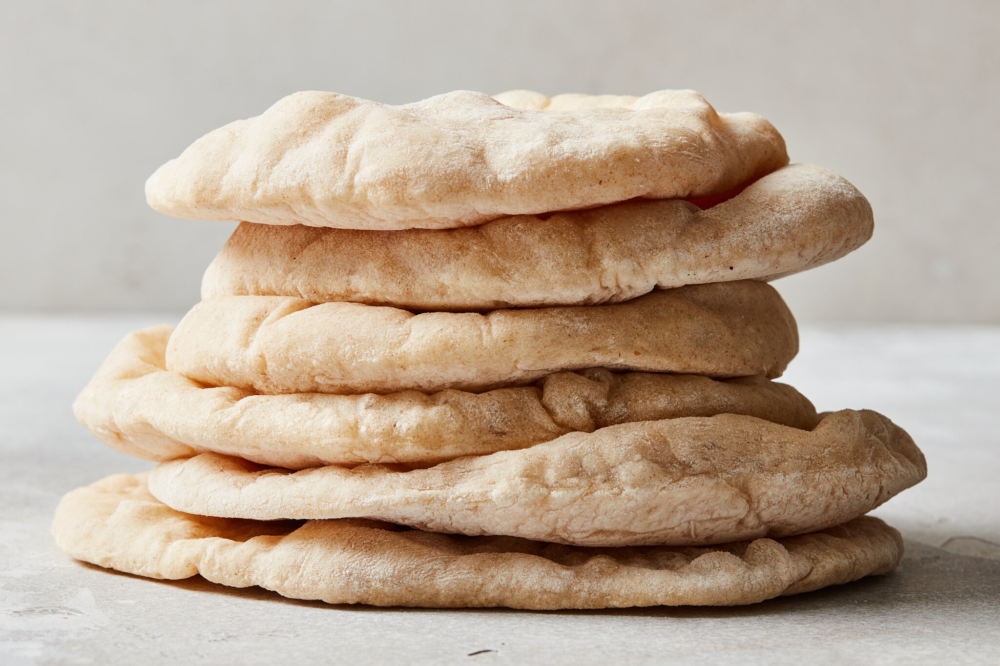

PITA BREAD

Description:
Pita is a family of yeast-leavened round flatbreads baked from wheat
flour, common in the Mediterranean, Levant, and neighboring areas.
It includes the widely known version with an interior pocket, also
known as Arabic bread. In the United Kingdom, Greek bread is used
for pocket versions such as the Greek pita, and are used for barbecues
as a souvlaki wrap.
The Western name pita may sometimes be used to refer to various other
types of flatbreads that have different names in their local languages,
such as numerous styles of Arab khubz.
Ingredients:
- 400 gr Flour Tipo 00
- 4 gr Fresh yeast
- 250 ml Water
- 5 gr Sugar
- 10 ml Olive oil
- 10 gr Salt
Steps:
- Put the water in a bowl and mix it with the salt.
- Add 10% of flour to the mix and add the fresh yeast,
beat it until the yeast is disolved in the dought
- Add the sugar and mix it.
- Add all the left flour and beat and knead the dought
until forms a consistent texture.
- Add the oil and do the same again, then remove it
from the bowl and knead for 20 min.
- Once the dought has a consistent texture put it
again in the sealed bowl and let it rest for 30 min.
- The size of the dought should have increased, now
cut the dought in to 4 pieces and round them.
- Put the small portions in different sealed containers
let them rest for at least 2 hours and they will be ready
for an awesome homemade pita bread